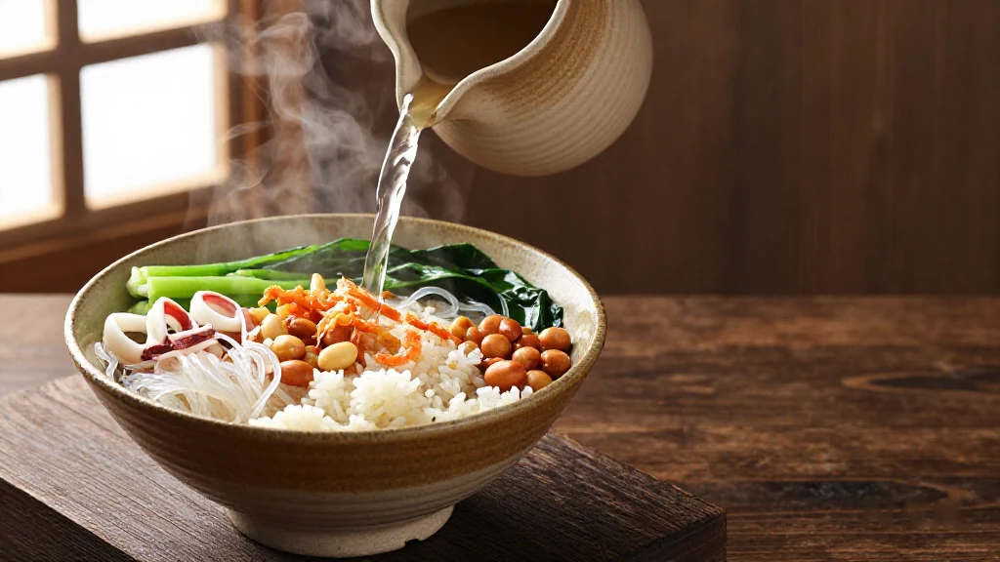
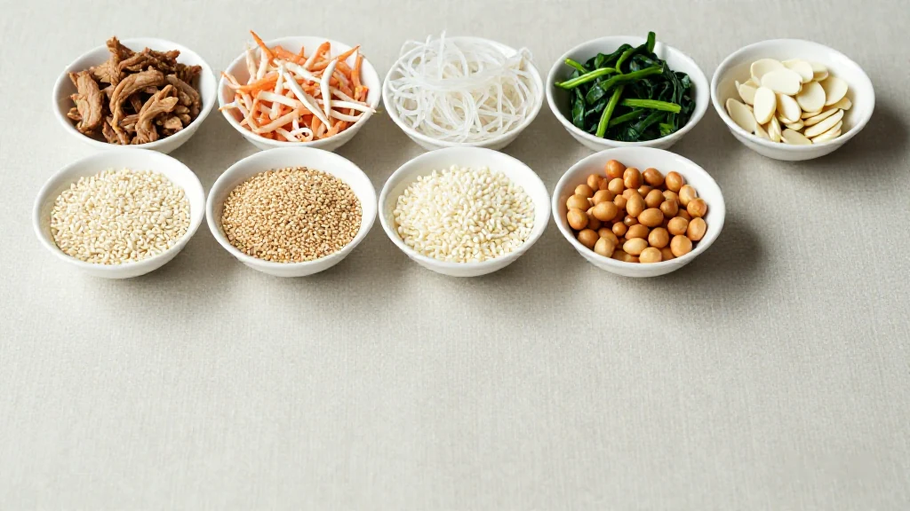
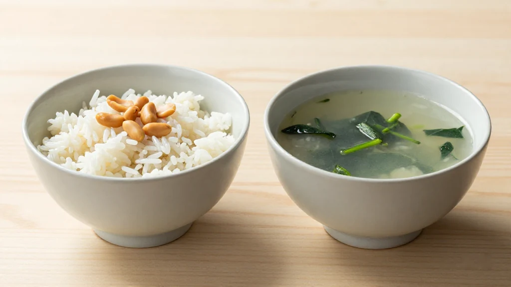
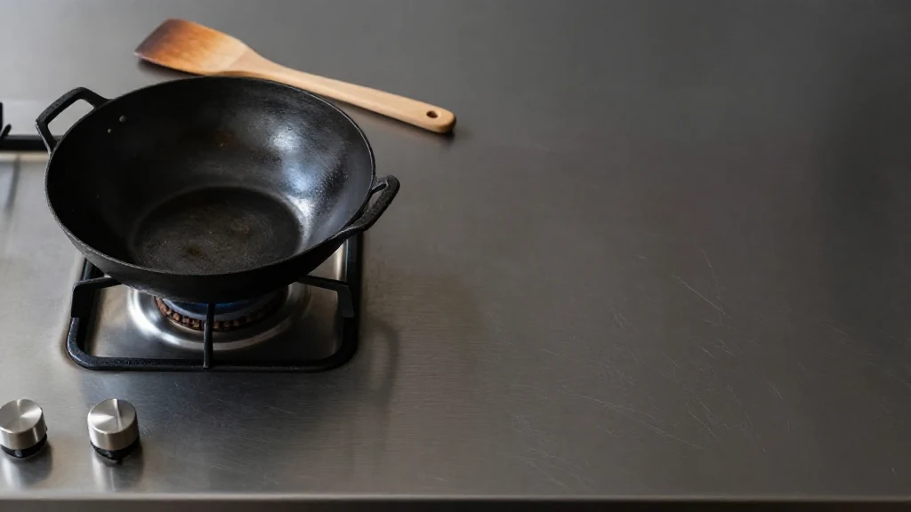
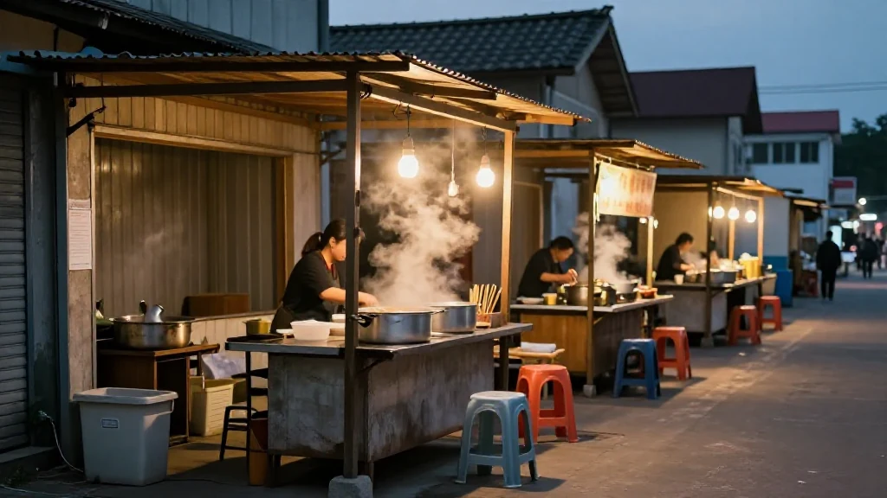
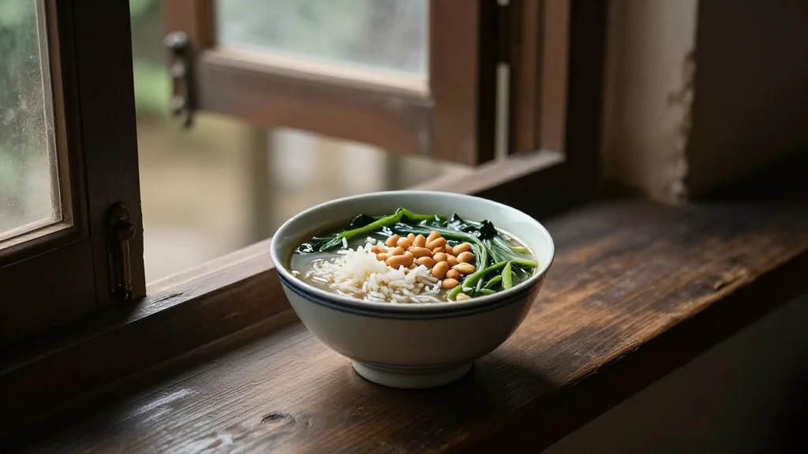
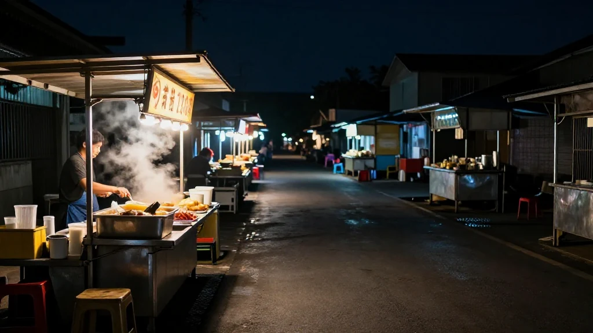

圖片由 AI輔助創作（Z-Image-Turbo）Image by AI (Z-Image-Turbo)
【鄭哥點評】
汕尾人打招呼，唔一定問「食咗未」，有時會問「今晚炒茶未？」——呢個「茶」，就係菜茶。
一個都市傳說變成嘅家常味道

圖片由 AI輔助創作（Z-Image-Turbo）Image by AI (Z-Image-Turbo)
菜茶唔係茶葉泡出嚟，而係用骨頭湯或特製油茶「沖」出嚟嘅一碗熱湯飯。佢有個古名——「炒丁茶」。聽老一輩講，以前每年正月先有，尤其係元宵節前後最盛行。點解叫「丁」？有呢個講法：以前正月初七至十三係「丁日」，各村輪流炒菜茶請親朋，「丁」就係添丁、人丁興旺嘅意思。
如今菜茶早已走入日常。聽講搬新屋、娶新娘三日、新居入夥，好多汕尾家庭都會炒菜茶請客，以茶代酒，慳錢之餘氣氛仲好。
點樣整？海陸豐各家有各家配方
圖片由 AI輔助創作（Z-Image-Turbo）Image by AI (Z-Image-Turbo)
基本配料（十幾種打底）：
先將以下食材分開炒熟或煮熟——
- 豬肉絲、香腸
- 鮮蝦、蝦米、魷魚絲
- 粉絲、腐竹
- 白米豆、赤豆、麥粒
- 菠菜、荷蘭豆
然後全部撈埋放碗度，撒上：
- 炒花生（係靈魂！）
- 炸米（爆米花咁嘅脆嘢）
- 芝麻
最後淋上湯底，分兩種：
| 湯底 | 特色 |
|---|---|
| 骨頭湯底 | 豬骨熬幾個鐘，鮮甜暖胃 |
| 油茶底 | 陸河出品嘅傳統做法，用多種野菜同茶葉一齊研磨 |
灑上胡椒粉，熱辣辣捧上檯——一碗菜茶，香到隔離屋都聞到。
海陸豐版 vs 客家版：有飯無飯大不同

圖片由 AI輔助創作（Z-Image-Turbo）Image by AI (Z-Image-Turbo)
汕尾城區、海豐公平、陸豐東海一帶流行「飯茶」——就係喺菜茶入面加埋米飯，一碗過食埋主糧，夠晒充實。
客家地區就多數係淨茶，唔加飯，就係為咗食餸送酒為主。
所以有經驗嘅老饕會話：「你要知係唔係汕尾本地人，就問佢菜茶加唔加飯。」
「炒茶唔難，難在配料夠晒心機」

圖片由 AI輔助創作（Z-Image-Turbo）Image by AI (Z-Image-Turbo)
「炒茶唔難，難在配料夠晒心機。」
我睇過做菜茶幾十年嘅人點做：蝦米要揀厚肉嘅，魷魚絲自己切，唔用現成嘢；炒米最考功夫，火唔夠大唔脆，火太大又苦。一碗擺上檯，睇吓配料顏色，就知整嘅人有冇心機。
推薦打卡：喺邊度食到正嘢？

圖片由 AI輔助創作（Z-Image-Turbo）Image by AI (Z-Image-Turbo)
- 海豐公平——其中一個發源地，據講當地老店仍然堅持用柴火大鍋炒配料，氣氛一流
- 汕尾二馬路——夜市攤檔林立，晚晚都有新鮮出爐嘅菜茶，遊客必試
- 陸河縣——客家版本；聽講七樣菜茶係年初七限定嘅習俗，要搭啱時辰先去到
一句到尾

圖片由 AI輔助創作（Z-Image-Turbo）Image by AI (Z-Image-Turbo)
菜茶就係海陸豐人嘅「液體故鄉」——一碗熱湯，裝住山、海、田、屋、幾代人。立秋之後天氣涼，唔該整碗試試？
汕尾美食座標

圖片由 AI輔助創作（Z-Image-Turbo）Image by AI (Z-Image-Turbo)
- 二馬路夜市：海鮮粿條湯、菜茶、薄餅、蠔烙一條街
- 晨洲蠔鄉：去到海邊先食到真正嘅鮮味——當地有句口號：「天下海鮮 汕尾領先」
- 紅海灣遮浪：睇日落、食海膽蒸蛋、嘆一杯古堡咖啡
圖片由 AI輔助創作（Z-Image-Turbo）Image by AI (Z-Image-Turbo)
[Zheng Ge's Take]
People in Shanwei do not always greet you with "have you eaten yet". Sometimes they ask, "have you fried the tea tonight?" That "tea" is cai cha — vegetable tea.
A Piece of Urban Legend That Became Everyday Food
圖片由 AI輔助創作（Z-Image-Turbo）Image by AI (Z-Image-Turbo)
Cai cha is not brewed from tea leaves. It is a bowl of hot soup rice, "rinsed" with pork-bone broth or with a special oil tea. It has an older name — chao ding cha, "fried ding tea". The older people here will tell you it used to appear only in the first month of the lunar year, above all around the Lantern Festival. And there is a story behind the name: the seventh to the thirteenth of the first month were the ding days, when villages took turns frying cai cha for relatives and neighbours. Ding means a new addition to the family, a household that keeps growing.
These days cai cha has moved into ordinary life. I am told that moving house, the three days after a bride arrives, a new home warming — plenty of Shanwei families fry cai cha for their guests, tea standing in for wine, cheaper and, honestly, better company.
How It Is Made: Every Hailufeng Household Has Its Own Formula
圖片由 AI輔助創作（Z-Image-Turbo）Image by AI (Z-Image-Turbo)
The base ingredients (a dozen or so to start):
First fry or boil each of these separately —
- shredded pork, Chinese sausage
- fresh prawns, dried shrimp, shredded squid
- glass noodles, bean-curd sticks
- white beans, red beans, wheat grains
- spinach, snow peas
Then tip everything into a bowl together and scatter over it:
- fried peanuts (the soul of the dish)
- puffed rice (crisp, like popcorn)
- sesame seeds
Last comes the broth, and there are two kinds:
| Broth | What it brings |
|---|---|
| Pork-bone broth | Pig bones simmered for hours: sweet, warming, kind to the stomach |
| Oil-tea base | The traditional Luhe method, wild vegetables and tea leaves ground down together |
A shake of white pepper, and it goes to the table scalding hot — a bowl of cai cha you can smell from the house next door.
Hailufeng Style vs Hakka Style: With Rice or Without
圖片由 AI輔助創作（Z-Image-Turbo）Image by AI (Z-Image-Turbo)
In Shanwei town, in Gongping in Haifeng county and around Donghai in Lufeng county, people eat "rice tea": the cai cha has cooked rice stirred into it, so one bowl carries the staple as well, and a bowl goes a long way.
In Hakka areas it is usually the plain version, no rice, because the point there is the dishes that come with the drink.
Which is why an experienced eater will tell you: if you want to know whether someone is really from Shanwei, ask them whether cai cha takes rice.
"Frying the Tea Is Not Hard — the Hard Part Is the Ingredients, and the Care"
圖片由 AI輔助創作（Z-Image-Turbo）Image by AI (Z-Image-Turbo)
"Frying the tea is not hard. The hard part is the ingredients, and the care that goes into them."
I have watched people who have made cai cha for decades go about it. The dried shrimp have to be the thick-fleshed ones. The squid is cut by hand, never bought ready-shredded. The puffed rice is the real test: not enough heat and it is not crisp, too much and it turns bitter. Set a bowl on the table and one look at the colour of the toppings tells you whether the person who made it put their heart into it.
Where to Eat the Real Thing
圖片由 AI輔助創作（Z-Image-Turbo）Image by AI (Z-Image-Turbo)
- Gongping, Haifeng — one of the places it is said to come from; I am told the old shops still fry the ingredients in a big wok over firewood, and the atmosphere is half the meal.
- Erma Road, Shanwei — night stalls packed side by side, fresh cai cha every evening, the one visitors should try first.
- Luhe county — the Hakka version. I am told the seven-vegetable cai cha is a seventh-day-of-the-new-year custom, and you have to time your visit for it.
In One Line
圖片由 AI輔助創作（Z-Image-Turbo）Image by AI (Z-Image-Turbo)
Cai cha is the Hailufeng people's liquid homeland — one bowl of hot broth holding mountains, sea, fields, houses and several generations. The weather turns cool after the start of autumn. Go and make yourself a bowl.
Shanwei Food Coordinates
圖片由 AI輔助創作（Z-Image-Turbo）Image by AI (Z-Image-Turbo)
- Erma Road night market: a whole street of seafood noodle soup, cai cha, flatbreads and oyster omelette.
- Chenzhou, the oyster village: you have to get to the coast for the real thing — there is a local saying, "seafood under heaven, Shanwei ahead".
- Zhelang, Red Bay: sunset, steamed sea-urchin egg, and a coffee at the old fort.